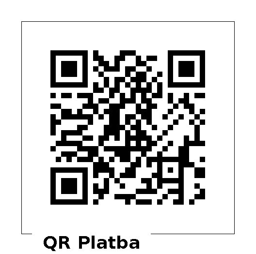

Ahoj naši milí svatební hosté! (i vy, kdo jste nakonec nedorazili)
Je to k nevíře, ale od naší svatby už uplynulo 7 týdnů! Nevíme, jak vy, ale my jsme si ten velký den opravdu užili, stejně jako svatební cestu. Doteď se k nám postupně dostávají různé vtipné historky, moc rádi se k těm vzpomínkám vracíme. V této zprávě vám posíláme sérii odkazů na fotky a videa, abyste si to všechno mohli taky trochu připomenout.
Chtěli bychom vám ještě jednou poděkovat, že jste to oslavili s námi. A nejenom oslavili, ale že jste také mnozí ochotně přiložili ruce k dílu. Děkujeme i za vaše přáníčka a štědré dary!
Hanča + Pedžut Daňovi
Fotky od fotografa Martyho
Fotky od fotografa strejdy Pavla Motana (včetně pátečních chval)
Fotky z fotokoutku
Známe se už mnoho let, ale cestu k sobě jsme našli před více než dvěma lety, kdy jsme si navzdory rozdílům řekli, že tomu dáme šanci. Začátek našeho chození skryla první vlna covidové pandemie a tak chvíli trvalo, než se rozkřiklo, že “Pedjut má holku!”/”Hanča má kluka!” Zažili jsme spolu mnoho krásných chvil a poznali toho druhého v nejednom zátěžovém momentu. Prošli jsme mnoho kopců a pohoří a ochutnali kdejaký burger. Pak přišel moment, kdy jsme stáli na rozcestí a rozhodli jsme se na další cestu životem vydat společně. A tak jsme se 3. října 2021 zasnoubili a těšíme se, že 14.5.2022 přijdete na naši svatbu. Více informací se dozvíte ve svatebních novinách nebo si můžete prohlédnout některé z našich společných fotek.
Už dávno jsme si přáli mít poklidný večer před svatbou, kdy už nebudeme řešit nic a budou se starat jiní, (protože to už za těch pár hodin nedoženeme). V průběhu let se tento původně Hančin nápad proměnil v touhu uspořádat večer chval. V našich životech je totiž opravdu za co děkovat Bohu a za co Ho chválit. A Pedjuta tato myšlenka naštěstí též nadchla. Takže v předvečer svatby v pátek 13.5.2022 v 18:30 v kostele sv. Václava na Kostelním náměstí v centru Ostravy jste všichni zváni se přidat a zapojit. Tento kostel je nejstarším ostravským kostelem a má příjemnou atmosféru, ale hlavně je to místo, kam Hanča na chvály chodí pravidelně každý týden a kde jsme mnohokrát byli i společně.
Vzhledem k tomu, že máme velké množství rodiny a přátel (a jejich dětí), bude svatba poněkud většího rozsahu (připravte se prosím na svatební ples). U kostela bude jen cca 60 parkovacích míst. A DK Poklad je uprostřed obytné zóny, takže s parkováním tam bude ještě větší problém. Proto prosíme, kdo můžete, přijeďte MHD. Z večerní party vás zpátky odvezou naši řidiči. Pokud byste přeci jen jeli na obřad nebo na večer vlastním autem, využijte prosíme jeho plnou kapacitu.
Vícero z vás se ptá na barvu svatby kvůli oblečení. Budeme ji ladit do teplých odstínů, ale přijďte klidně v jakémkoliv společenském oblečení, ve kterém se cítíte dobře. Teplé barvy: žlutá, oranžová, růžová, červená, fialová a cokoli, co je mezi tím (Pokud se vám třeba stala se slušným oblečením nehoda jako posledně Pedjutovi nebo prostě máte doma jen rifle, raději přijďte v něčem méně slušném, ale přijďte ;) Bezpečnostní upozornění: dřep v dobře padnoucích kalhotech může způsobit velkou ránu ;)
Velmi jsme si sice přáli obdržet 3 remosky, 5 varných konvic, 8 sad nádobí, patnáctero povlečení a dvacítku ručníků, protože to přece patří ke správné svatbě :) Ale jistě víte, že každý z nás žije svůj samostatný dospělý život, a tak se nám v manželství naše výbavička náhle zdvojí. Budeme tedy mít i bez hmotných darů spoustu praktických věcí spíše na rozdávání.
Největším darem pro nás bude, pokud se za nás budete modlit a přijdete svatbu oslavit s námi. Pokud byste nás přesto chtěli obdarovat, uvítáme finanční příspěvek na pokrytí nákladů svatby, svatební cesty a dovybavení bytu. Pro bezhotovostní cestu můžete použít následující QR kód. DĚKUJEME!
Bereme se o kousek později než spousta z vás, našich vrstevníků, a máme radost z toho, že mnohým Pán Bůh mezitím dopřál a svěřil děti. Pokud můžete, prosíme, abyste si našli hlídání. Věříme, že si to i vy pak můžete více užít. Ale pokud nemůžete, raději vás chceme na svatbě i s dětmi než vůbec, a proto pro ně budeme mít připravený dětský koutek.
Hostům pozvaným na oběd se postaráme i o ubytování, pokud o to vyjádřili zájem. Pro hosty pozvané na večer máme domluvené zvýhodněné ceny (500-550 os/noc bez snídaně) v několika penzionech v blízkém okolí DK Poklad. Pokud byste chtěli úplně studentskou variantu spaní na karimatce, jsme schopni zařídit i taková místa. Prosíme, ať nám dáte vědět nejpozději do neděle 10.4. a případné pozdější změny budeme řešit individuálně.